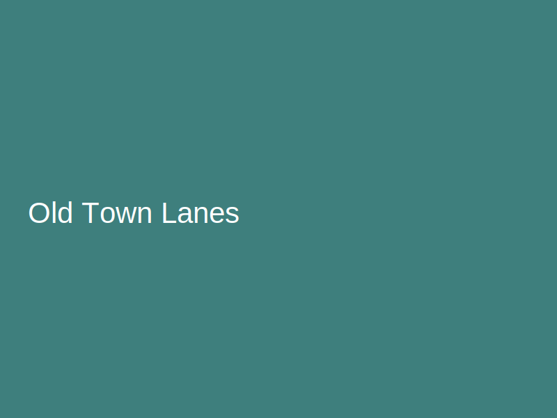
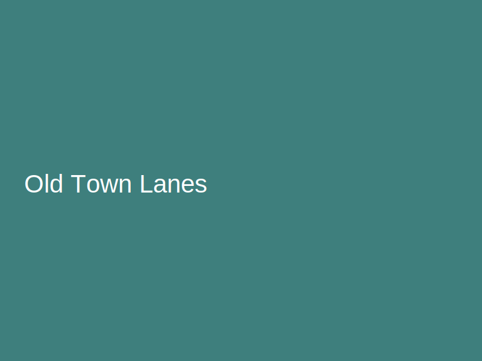
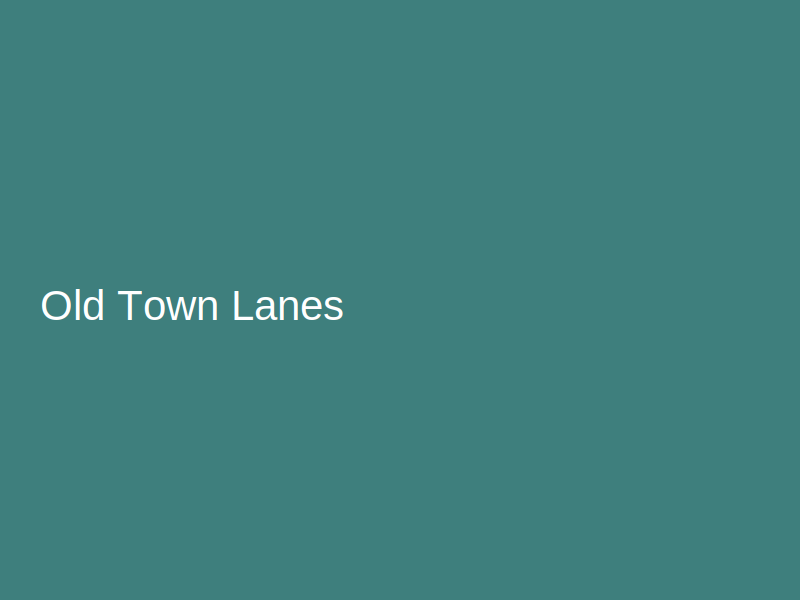

← Back to Places of Interest
 

Old Town (Staré Mesto)
Neighborhood
Cobblestone lanes, pastel facades, and lively squares.
Curiosities
- Look for playful street statues like Cumil peeking from a manhole.
- The Main Square hosts seasonal markets and festivals.
